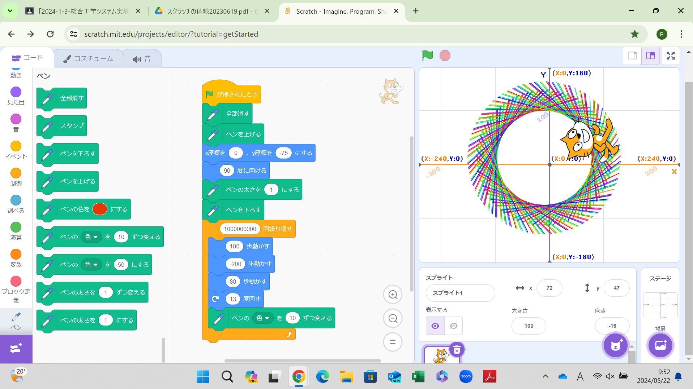
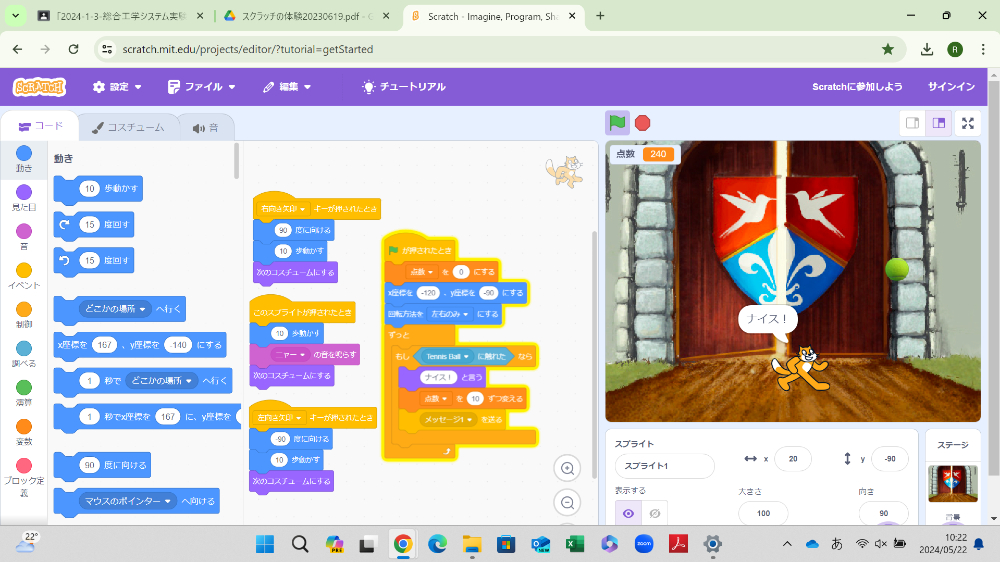

1週目のレポート ： 公大高専１年実習I-1
I1班14番 ひとちゃんマン
第1週目
1-1 サイエンスアート

1.内容
スクラッチを使って線を書くプログラムを作成した。猫が規則的に動きその猫が通った所に線が引かれるようなプログラムになっている 。1周ごとにペンの太さを変えたりと、様々な工夫を施した。
2.感想
スクラッチはほぼ初体験の状態だったので、どうなるか不安だったが、意外と簡単に組み立てることができ、 楽しく体験することができた。 X座標とY座標の細かい設定が難しかった。
1-2 ゲーム

1.内容
猫を動かして上から落ちてくるテニスボールをキャッチするゲームのプログラミングをした。乱数を使ってボールの落下スタート位置や ボールの落ちるスピードを変えたりした。「キーが押されたとき」を使って猫が自由に動けるようにしたり、猫がテニスボールを取ったら 点数が加算されるようにもした。
2.感想
プログラミングを組み立てること自体は難しくなかったが、自分でプレイしてみて面白みがないなと思った。なのでボールが落ちてくるスピードの幅を最初より 大きくしたり、テニスボールのサイズを変えてみたりいろいろ工夫した。いつも何も考えずにプレイしているゲームのすごさがとても感じられた。
1-3 ホームページ作成
私のホームページ
1.内容
自分のホームページをgithubを使って作成した。自分の趣味など、自分好みにホームページを作り替えた
2.感想
初めて作ったけど、ホームページを作ること自体は僕たちにもできるのだ、と思った。しかし僕が作ったのはあくまで基本ができている とても簡単に作れるサイトだと考えると、日常で見たり使用しているサイトがどれだけの技術が必要なのかがわかった。 またそのようなサイトが多く存在するということから社会の技術の進歩も感じられた。
各ページへのリンク
1週目のレポート
2週目のレポート
3週目のレポート
私のホームページ